Salut les amis, après notre mission de modélisation du Glacier d'Upsala, nous avons quitté la ville de Calafate et avons longé les Andes vers le Nord jusqu'à celle de Balmaceda (côté chilien), où les Andes étaient les plus belles pour être traversées - selon les dires des pilotes locaux, bien sûr ! De là nous avons rejoint la ville enfumée de Coyhaique où les gens se chauffent encore au feu de bois et au charbon, puis le petit port de pêche de Puerto Aysen.
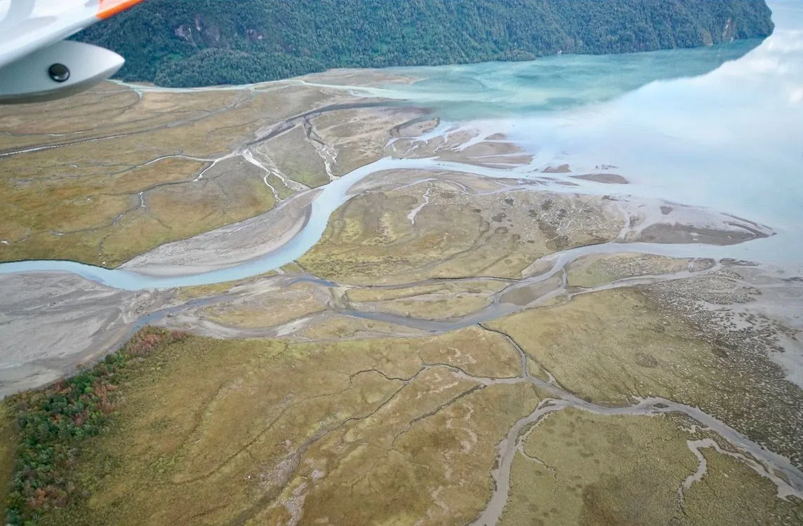
Pourquoi sommes-nous au coeur de la Patagonie chilienne ? Parce qu'Alejandro, Professeur de géographie et Directeur de la station de Recherches Interdisciplinaires, nous a lancé un défi : "Votre mission est simple : ramenez-nous autant d'informations que vous pourrez en trouver ! Nous avons cru comprendre qu'au centre de la zone, un terrain serait plat ; nous n'en savons pas plus car il est si encaissé entre les montagnes, que l'ombre le recouvre entièrement. Mais qui sait, peut-être pourrez-vous vous y poser, et nous rapporter des échantillons de végétation ?"
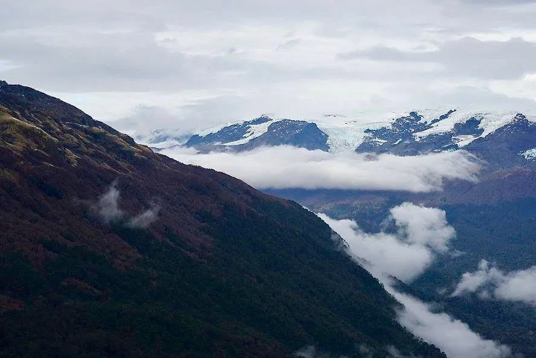
Le soir ils reviennent bredouille. Pourtant nous devons repartir, il n'est pas possible de bivouaquer sur place. Encore trois jours de transport dans l'autre sens, et nous voici rentrés à Puerto Aysen ! Il est maintenant temps de préparer notre mission.
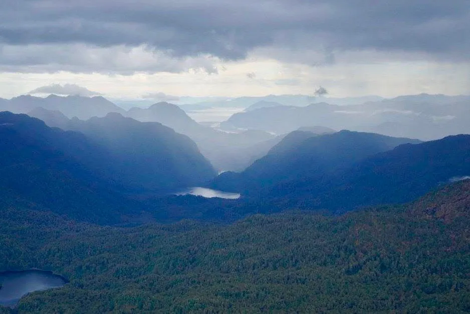
Tout d'abord, nous assurons notre sécurité : nous choisissons, avec l'aide de notre routeur Ernest, le jour où la météo est la plus sèche et la moins venteuse, et prévenons les pilotes locaux ainsi que notre base-arrière de Prepare2Go de notre intention : ils pourront ainsi nous localiser en temps réel grâce à notre balise satellite, et déclencher les secours héliportés en cas d'accident. Nous prenons ensuite des réserves d'eau et de nourriture bien protégées.
Puis, nous assurons la sécurité de la mission : dans l'hypothèse où nous pourrions nous poser sur la partie plate qu'a identifiée Alejandro, il est essentiel de ne pas contaminer ce milieu préservé. Pour cela nous nettoyons et désinfectons intégralement l'ULM - roues et flotteurs compris - ainsi que nos combinaisons étanches de survie.
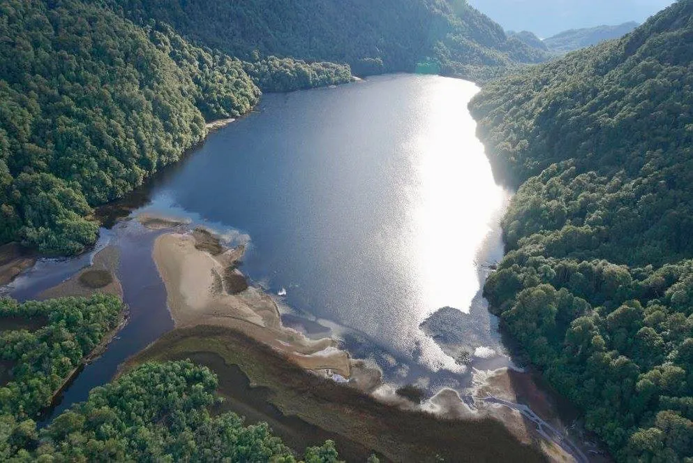
Ca y est, nous sommes fin prêts ! Nous décollons au tomber de la brume givrée matinale, et mettons le cap au sud. Nous longeons d'abord la côte pacifique puis lorsque celle-ci se disloque en centaines de petites iles, nous restons au dessus de ces bras de mer dont l'eau salée et tiède se mélangent avec l'eau douce et plus froide des affluents des glaciers, en créant de magnifiques volutes aux couleurs cristallines. Lorsque nous atteignons la bonne latitude nous rentrons dans les terres et contournons les volcans aux pentes arborées : nous sommes à l'automne, et les montagnes se parent de multiples bandes de couleurs allant du rouge, à l'orange, au jaune et au vert.
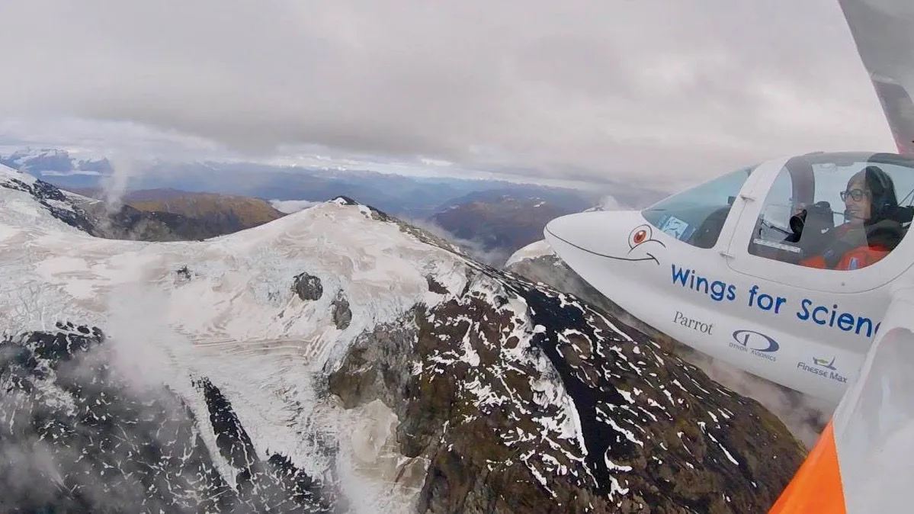
Nous photographions méthodiquement le couvert végétal et tentons - sans succès - de distinguer depuis le ciel une rivière qui permettrait, en la remontant à contre-courant, de pénétrer l'impénétrable.
En approchant de la zone plate, très encaissée entre les montagnes, nous distinguons... oui c'est bien ça, un lac ! invisible sur les cartes ! Pourrons-nous amerrir ? Pas évident, nous ne connaissons pas sa taille et les montagnes autour sont à-pic. Nous effectuons donc plusieurs passages en diminuant progressivement d'altitude : si à un moment la remontée semble difficile, on arrête là ! Mais non, la remontée à pleins moteurs fonctionne à chaque fois, et le lac semble assez grand pour s'y poser.... En plus on y voit même une petite plage... Allons-y !
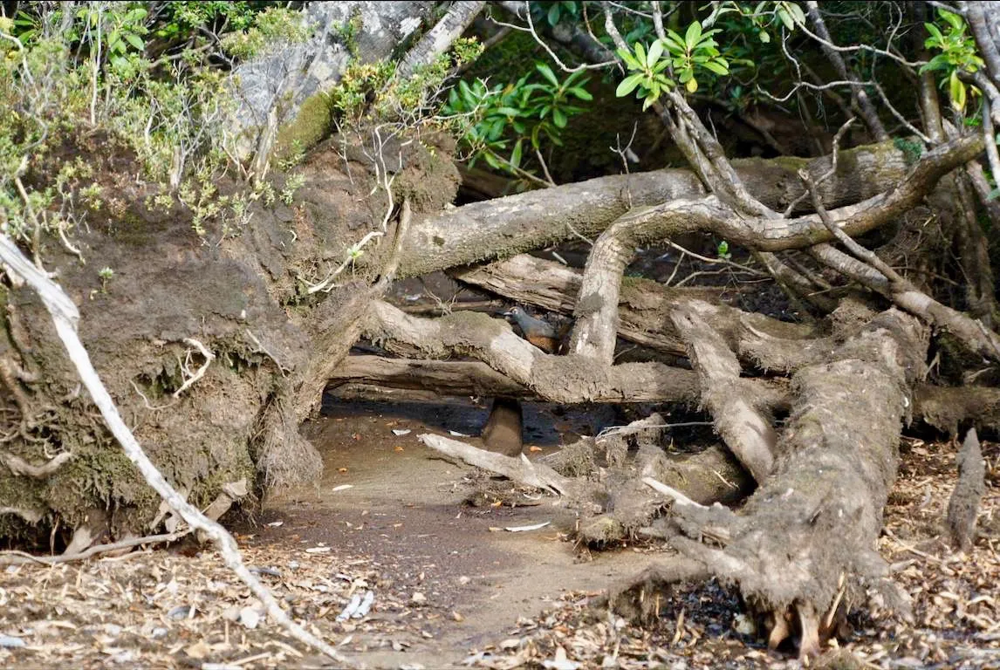
Lorsque le moteur s'arrête et que nous sortons les rames pour nous approcher de la plage, on se prend à rêver de ce qu'a dû ressentir Neil Armstrong. On enfonce la rame dans le sol, il parait assez ferme. On sort donc précautionneusement de l'ULM et Adrien pose le premier pied au sol.... Je lui tends l'ancre, et lorsque l'ULM est bien arrimé dans le sable, je descends à mon tour. Devant nous une couche de sable, ponctuée par endroits par des bandes de roseaux, et par d'autres par des sortes de mares d'eau douce stagnante, desquelles remontent des bulles : sans doute une réaction chimique provoquée par notre pas qui soulève des végétaux désintégrés ? Ou des fumerolles liées à un volcan éloigné ?
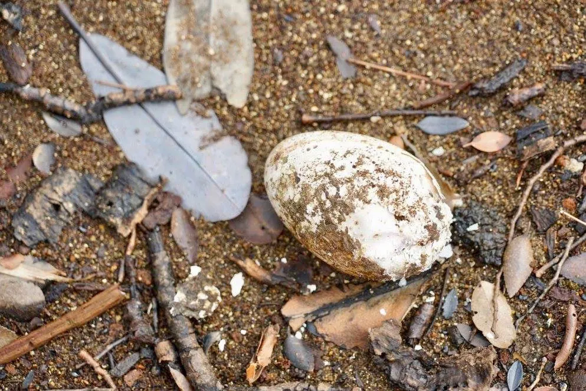
En bordure de sable, à la limite avec la forêt qui recouvre les pans des montagnes, on distingue des arbres aux racines aquatiques découvertes : ces arbres nous montrent ce qui fut la limite de l'eau il y a peu ! En fait, nous avons beaucoup de chance : si le niveau de l'eau était aujourd'hui celui qu'il fut lorsque ces racines plongeaient dans l'eau, nous n'aurions pas pu accoster car il n'y aurait pas eu de plage.
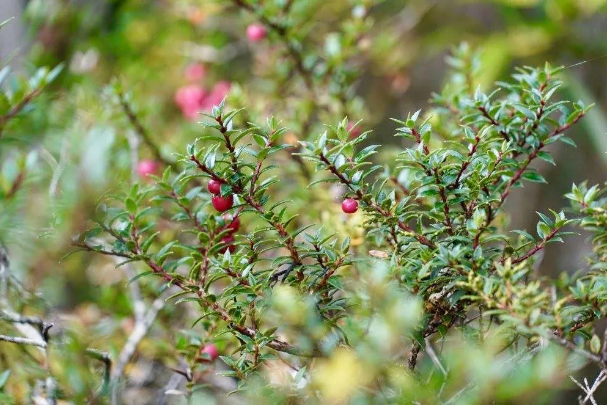
Le temps est compté, plus le temps de s'émerveiller : il faut être reparti à temps pour voler et se poser à Puerto Aysen de jour ! Il nous reste peu de temps ! Nous nous équipons de sacs plastiques étanches, et prélevons dans chacun des échantillons de sol : ici de la terre, là du sable, là de l'eau des mares, là de l'eau du lac, là des feuilles mortes, là des baies, là des branches, ici encore des roseaux... Nous notons tout attentivement et photographions de près chaque découverte.
Et là, oh ! Un oeuf ! Non deux, non trois ! Ils sont plus gros qu'une poule, et près d'eux il y a des plumes... L'un d'eux est entr'ouvert, on réalise donc que ces oeufs ne sont pas couvés ni fertilisés. Pas d'animal à l'horizon, pas même les pumas que nous aurions pu rencontrer à cette altitude - selon les géographes - mais, mieux vaut ne pas déranger ceux qui doivent être cachés dans les feuillages. Au moment de repartir, un petit piaillement me fait lever la tête : oui un petit oiseau ! Trop petit pour pondre les oeufs aperçus, toutefois.
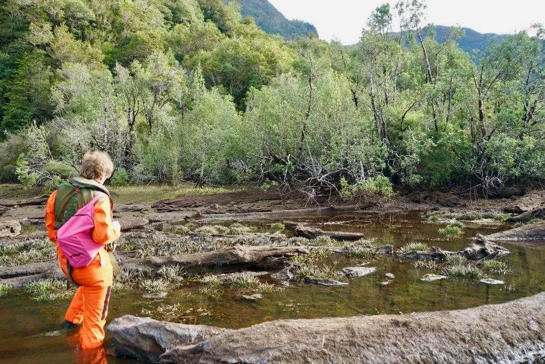
Nous décollons, et remontons en spirale pour sortir de l'entonnoir entre les montagnes. Ouf, nous avons réussi ! Sur le retour nous louvoyons entre d'autres montagnes puis le long d'un autre affluent de glacier entre les îles, et rejoignons enfin Puerto Aysen, épuisés. Quelle émotion !
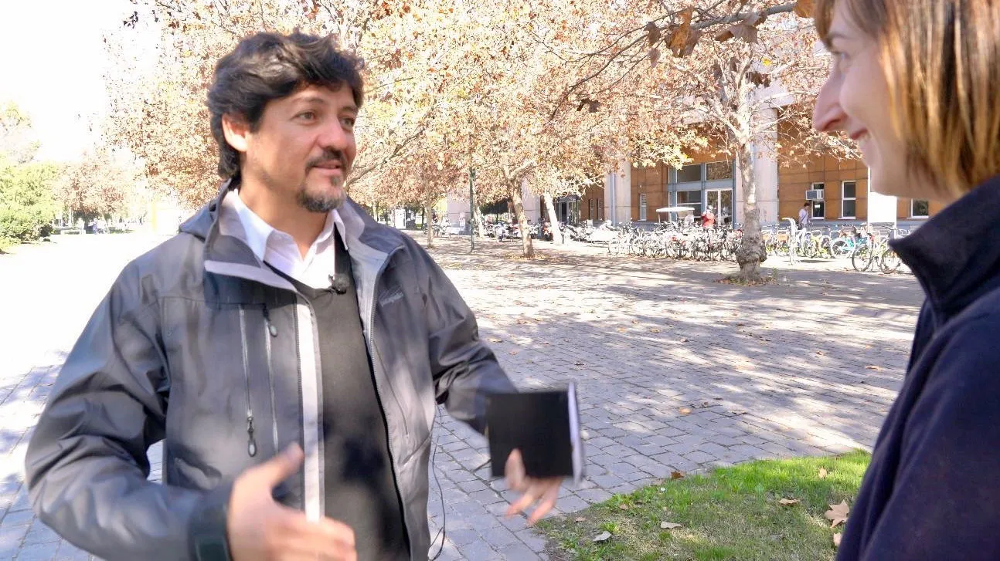
Lorsque nous le croisons dans les locaux de l'université, Alejandro répartit les échantillons dans différents laboratoires, pour étude. Il nous apprend aussi que l'équipe française du groupe de recherche "Observatoire Hommes-Milieux" du CNRS, a prévu de le rejoindre pour prolonger l'étude. Nous ne les croiserons pas car nous repartons pour notre mission suivante, mais leur souhaitons bon courage !
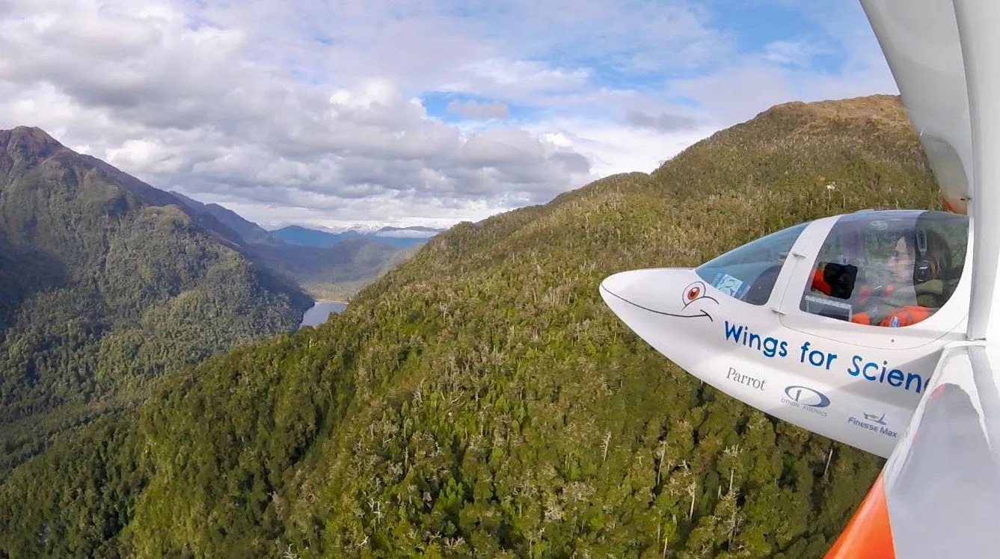
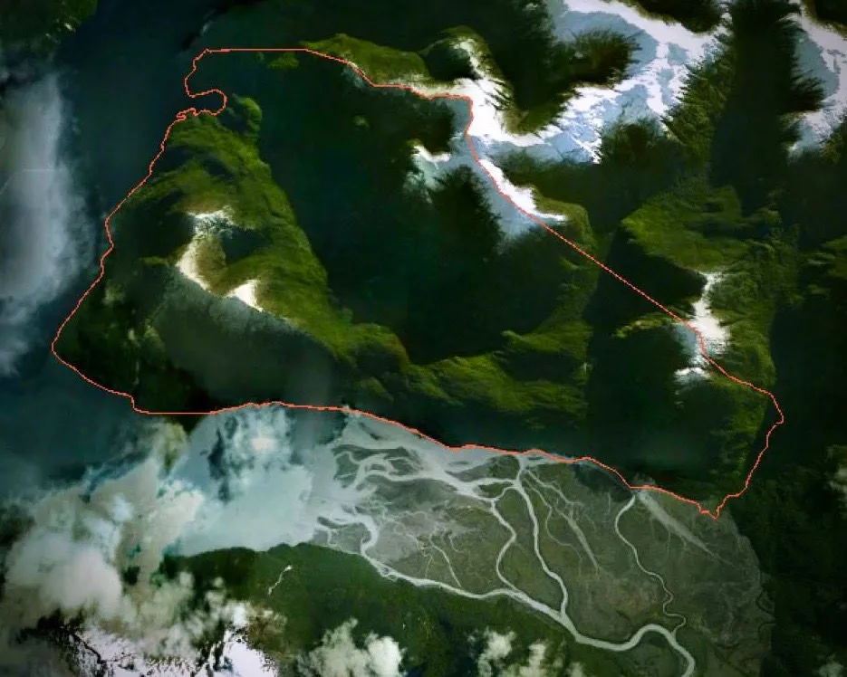
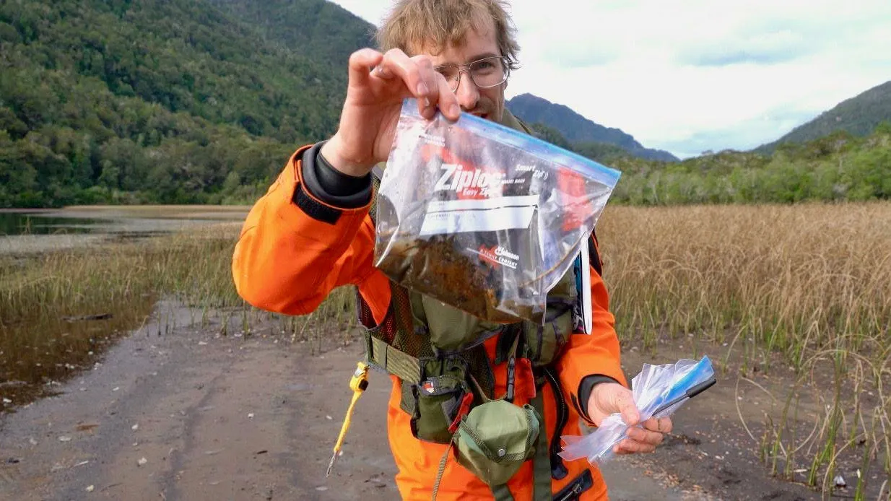